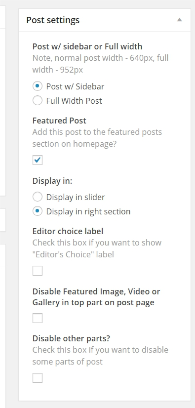
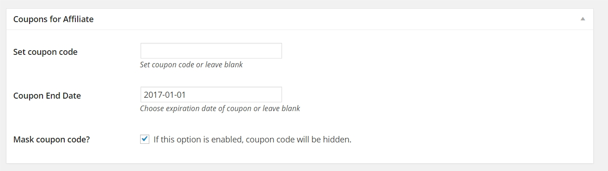
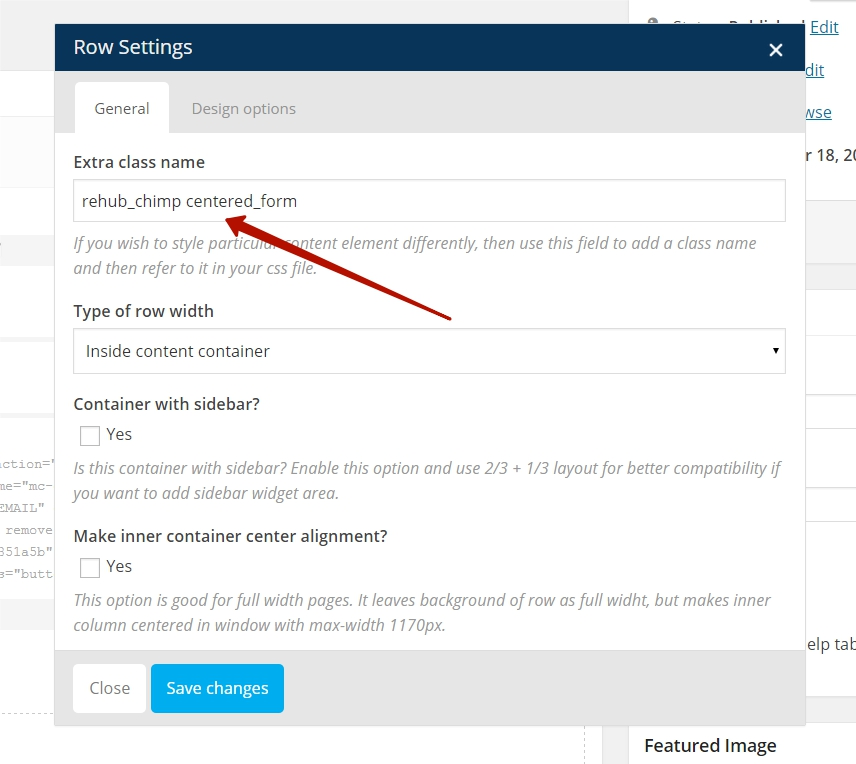

Thank you for purchase ReHub Theme
Hybrid magazine, review, news theme with shop and affiliate features
To install this theme you must have a working last version of WordPress already installed. For information on installing the WordPress platform, please see the WordPress Codex. Upon downloading the "package.zip" file from Themeforest, you'll have all files you need inside. Extract the "package.zip" file and inside you will find the theme zip file called "rehub.zip", that is the file you need to install.
You can install the theme in two ways: through Wordpress, or via FTP. If you have trouble installing the theme via Wordpress, please proceed with installing it via FTP and you will be able to get around the issue.
Follow the steps below to install via Wordpress.
- Navigate to Appearance > Themes.
- Click Install Themes and hit the upload button.
- Navigate to find the "rehub.zip" file on your computer and click "Install Now" button.
- The theme will be uploaded and installed.
- Activate the newly installed theme. Go to Appearance > Themes and activate the installed theme.
Follow the steps below to install via FTP.
- Log into your hosting space via an FTP software
- Unzip the rehub.zip file and ONLY use the extracted rehub theme folder
- Upload the extracted rehub theme folder into wp-content > themes in your wordpress installation
- Activate the newly installed theme. Go to Appearance > Themes and activate the installed theme.
I included the exported XML file from our demo, this allows you to quickly set up posts and images from demo site..
Follow These Steps Below To Import The XML File- The XML file is included within the download package at root level in a folder called Demo Data
- Navigate to WP Admin > Tools > Import
- Select and install WordPress importer
- Once its installed, select the XML file and upload it. It will take a few minutes to install and upload all content
- If you want to see the same data as on demo site, before importing XML file, install and activate plugins Woocommerce, BBPress, YITH Woocommerce Compare, YITH WooCommerce Wishlist, EasyDigitalDownloads. + ThirstyAffiliates, WooSidebars, MDTF, Visual Composer from theme bundle.
- After uploading demo data, go to Appearance, Menus and choose main menu. Assign it to primary menu area. And top menu to top menu area
- To import widgets, install plugin Widget Importer & Exporter and import file from demo data folder rehub.wpsoul.net-widgets.wie
- To import theme options - copy content from file in demo data folder "theme_option.txt", go to theme options - utility and import data
Making clone of demo site (rehub.wpsoul.net)
If you want to get full clone of demo site, with all settings, plugins and options, you can find instruction for this in Demo_data/how to get clone of demo site.txt
From time to time, a theme update will be released that either fixes a bug and/or adds new features to the theme. You can update the theme in one of two ways:
Updating Automatically
Envato have developed the Envato Toolkit Plugin for WordPress. You can use this to receive notification of updates to themes purchased from ThemeForest and to automatically update (upon clicking) directly from within your WordPress admin area.
- Download the plugin zip file to your computer.
- In your WordPress admin area, go to Plugins > Add New then click Upload.
- Click Choose File, select the plugin zip file you downloaded and click Install Now.
- After installation, click Activate.
- Click the new Envato Toolkit link in the menu and follow the instructions to configure the plugin.
Updating Manually
- Download the most current version from ThemeForest in the "Downloads" area of your account.
- Unzip the package and locate rehub.zip in the theme folder.
- Go to Appearance > Themes and activate another theme such as the default WordPress theme.
- Delete the REHub theme which is now inactive.
- Go to Install Themes > Upload then install and activate rehub.zip from the new package.
Note
NOTE: Updating the theme will overwrite any changes you made to any of the core files (index.php, style.css, header.php, etc), however, you will not lose any changes you made to the Theme Options, menus, widgets, etc.All of our Themes are able to be translated into any language. The following instructions are given as guidance.
- Download and install POEDIT
- Connect to your site -> open rehub/lang directory
- Download the default.po file and open it with POEDIT.
- Translate file and save it as your language string. You can see this string in file wp-config.php in root folder of your site on line define ('WPLANG', 'en_EN'); en_EN - is your language string, so save your file with same name.
- Two files will be generated after save with .po and .mo extensions.
- Upload the .mo and .po files into wp-content/themes/rehub/lang folder
How to update translation
Open POEDITOR, open your .po file and click on "update from POT file", then open theme folder/lang folder. By default, you will not see any files. So, in right tab choose to show "all files". Now you can see all files, choose "default.po" file
If you don't want to use external editors, you can try to use awesome plugin Codestyle Localization. It allows to do localization inside wordpress admin panel. Also, theme now supports WPML.
If you need to translate only some words, it's more better to use codestyle localization plugin. Short instruction:
Install and enable plugin. After Activation locate WP Admin -> Tools -> Localization. Wait some seconds while plugin analize all your plugins and themes.
Now select "Themes" tab and locate the Rehub theme. The plugin will auto-detect the translation files. Sometimes plugin detects 8-10 languages, but if language don't have both po and mo files, you need to delete it and create new localization file.
If you don't find your language, click on button "add new language". Choose your language. Then you need to click on rescan button of your language. Plugin analize theme files, then you can edit language files. After editing, save mo file
This Theme uses wordpress built-in menus feature which can be found in your wordpress dashboard > appearance > menus. Follow the next steps to define menus for each of the theme's menu locations.
- Navigate to Apperance > Menus page
- Click the "create a new menu" link to make a new menu. Enter the name then hit Create Menu
- To add a menu item, you can easily select one of your already made pages on the left hand side and click Add to Menu
- You can also add menu items by entering a custom name and custom link into the Links box.
- You can manage your menus using the drag and drop functionality. To create a dropdown menu, simply drag a menu item below and slightly to the right of another menu item and it will lock into place and create a dropdown section.
- Save your menu. After that go to Manage Locations tab and set your created menu as Primary Menu (or other)
- Once its all done, make sure you click the Save button.
- You can change menus locations in any time from Manage Locations tab .
Please, don't add a lot of positions to first level in main menu, because sometimes they can't fit in one line.
How to add descriptions to links
That's easy. Click to Screen Options in right top corner of page and enable there Description checkbox. After this, for each menu item you can add description
Rehub theme has 1 sidebar area, 3 footer areas and ecwid area. Sidebar widget area is used on all pages. Footer widgets works only if you enable them on page Theme options > Footer Options. Ecwid widget area works only on page with Ecwid template.
Our theme has 9 custom widgets with excellent functions. You can find them with names that begins with ReHub:
Also all buid-in woocommerce widgets and standart wordpress widgets are customizated to match design.
I recommend you to install plugin Woosidebar that bundled with theme. After setup Rehub theme you can see notice to install this plugin, just follow instruction to do this.
Woosidebar is very simple and usefull plugin to manage and creating sidebar widget areas. For example, you can create new widget area for your woocommerce shop pages. To do this, go to Apperance > Widget Areas, create new area, click on Advanced tab, select Woocommerce and check all checkboxes
Now you can add widgets that will display only on woocommerce pages.
Sticky widget
REHub theme has many unique functions. One of them - sticky widget. It displays any custom html code (banner, ads, forms) in sticky sidebar when scrolling content below sidebar content. To see how it works just go to demo page
Use this function with widget ReHub: Sticky on scroll
Also, a good widget from 4.0 version - is Top Offers.
All of your posts must have a featured images, these images will appears in the slider, homepage news boxes, sidebar .. etc
The recommended size for the Featured images is 765px x 400px, for featured posts in featured area 765px x 460px
Theme cropped all uploaded images to fit its places in the theme. There are two ways of cropping - with standart functions of wordpress or by using built-in script (bfi thumbs). To enable script cropping enable it in Theme Options - Global Enable\Disable - Enable resizer script (enabled by default). Then script create folder wp-content/uploads/thumbs_dir for thumbnails. On some servers script can't do this, so create it manual and set 777 permissions.
Sometimes, cropped images are not very good for you. So, you can try to disable cropping. Check Disable crop in resizer script
If you want to use standart wordpress thumbnail cropping and you have any problems with the size of old images which uploaded before install the theme you need to use Regenerate Thumbnails Plugin or AJAX Thumbnail Rebuild Plugin to regenerate thumbnails with suitable sizes.
Avatar setting
The theme uses Gravatar to display users avatars . to craete or change your Gravatar :
If you have never setup a Gravatar account:- Register / login to Gravatar. Upon registering, use the SAME email address that is associated with your WordPress User Profile.
- Upload your photo and associate it with that specific email address.
If you already registered at gravatar.com, follow these steps:
- Click on "My Gravatars" .
- click on "Add a New Email" .
- Then, you'll need to click on "Add a New Image" .
- Upload an image .
- Then select the email address, and then select your image from bottom. Now it's associated with that email address. Click Save .
- It will take about 5-10 minutes to propagate on the internet, and then will appear on site.
Profile
Social icons, description of author box you can set in Users - Your Profile
Support for google +
I recommend you to set link to your google + account, because it will be used for person schema format. When you will create review, data from field will be used as author of review. You can set it in Users - Your Profile - Google Plus Username
If you want to change color style of your theme, so go to Theme Option - Appearance/Color and choose predefinite color styles or custom color + some additional color settings
If you want to change color style of your header, so go to Theme Option - Header and menu. You can choose predefinite default style of header (white or dark) or set any color for header, menu, logo area, top line area
Also, each category has option for enhanced color styles. It can be set on page Posts - Categories, then click on edit link below category name.
This color will be used in many content blocks
Satisfy results.
In post settings you have options to set any post as featured, add "editor's choice" label, set post as full-width, and disable any part of post. All these setting you can find in "Post settings".
Featured post
This option set post as featured, so it can be visible in top featured section on home page. Also it can be visible in featured slider in sidebar or other content blocks that have option to filter featured posts.
1. Featured Slider
2. Featured right section
When enable this option, post will have editional bages in string and icon in post content.
REHub is very flexible theme, so you can disable parts of content that you don't need: breadcrumbs, social share buttons, ads after post, author block, related block, tags, etc. Also you can disable block with featured image (video, audio, slider) at top of post. You can do this in Post settings for any post.
Also you can disable some parts globaly in Theme Option - Global Enable/Disable
Paginated posts - is standart feature of wordpress. REHub theme has support for this feature. Example
To paginate any post just insert in content following code to wherever you want to break the post up into a new page:
<!--nextpage-->
WordPress can be configured to use different Page Templates for different Pages.
How To Use a Page Template
- Go to Pages --> Add New
- On the right-hand side, you will see the following panel titled Page Attributes with a drop-down under Template:
- Select the Page Template you desire.
- Publish the Page
Some examples.
Login page - example
Timeline - example
Landing page - this page don't have header, sidebar, footer like other pages. Only content area and background. It will be used for landing pages, system pages, "thank you" pages. Also it has function to brand this page with custom backgrounds, header, cover images. Example
Ecwid page - example
Offer archive - example
Catalogue constructor - example
Top reviews page - example
Page builder - for building custom page with content blocks. Description home page and page builder
Page for visual layout builder - is good when you want to control width of page. It allows to disable boxed version, disable header and footer and this template don't use title in top of page. So, this is good for creating home pages, landings, etc
There are many others templates. Many of templates have additional settings. To see and use them, you need to save draft or publish page after you choose template. We discuss many of these templates in other parts of help files.
To set one of the pages you have create as a Homepage:
- Go to Settings > Reading
- Select "A static page"
- For Front page select the page you want in the select box.
By default on home page you can see last posts. But REHub theme includes powerfull page builder that helps you to build custom pages.
From version 3.9 you can choose between built-in page builder and layout builder based on Visual Composer plugin.
There are some difference between these page builders. Built-in page builder has only 13 blocks and it works in content area. You can't set full width blocks with it, you can't set custom titles and mix content and content blocks. Layout builder is much more functional, so I recommend to use it. But, as any other layout builder plugins, visual composer creates more load on server and can cause some problems if you have weak hosting.
How to activate Layout builder
At the top of each page in admin panel you will see such message
Activate plugin, if you need it.
Layout builder gives you instruments to mix different content blocks with custom elements, like headings, icons, backgrounds, tabs, images. You can make your content full width, centered, boxed, in columns. Infinite possibilities for creating custom layouts. Also, many content blocks have enhanced sorting and ordering options. This is useful when you want to divide your content on logical parts. Layout builder is based on Visual composer plugin from codecanyon.
Some tips for layout builder.
First of all, I recommend you to use "Page for visual builder" template on pages where you want to use visual composer. This is because such template has additional settings, where you can disable your header (this is good for landing pages), footer, disable default background, disable boxed style of content
When you add any element, layout builder creates row for it. Each row has some important options.
Type of row width
Inside content container means that row has inner width of parent container
Full width of content container makes width of row like parent content container.
Full width of browser window makes width of row ignore width of parent container.
Container with sidebar
By default, if you want to add layout with widget area, your sidebar will be 270px (if you will use 3/4 + 1/4 column layout) or 384px (if you will use 2/3 + 1/3). It's not good for ads. So, to fix this and create static sidebar in this row, enable this option and use 2/3+1/3 layout. Or use predefinite visual composer template "Row with sidebar area"
Make inner container center alignment?
This option is good when you use width row as full width of browser window. Sometimes, it's good to have full width background color or background image, but text and other content place to center (this prevents stretching content)
Inline, float, margin tips
Most of elements has field Extra class name. I have made some useful classes which you can add to this field
inlinestyle - use it if you want to make some elements on the same line. For example, some icons
floatleft - this makes element float: left
floatright - this makes element float: right
font80
font90
font110
font120
font130
font140 - By default, text block has font size as text block of theme content, but you can increase or reduce size. For examle, font80 - makes font size of text element 80% as default font size
mr5
mr10
mr15 - makes margin from right. mr5 - 5px, etc
ml5
ml10
ml15 - makes margin from left. mr5 - 5px, etc
bg_r_b - set background image position to right bottom
bg_r_t - to right top
bg_l_b - to left bottom
How to activate Built-in page builder
To use it create any page and select in Page Attributes Template "Page Builder" and save page. After saving you can find additional block Page Block Builder
In this block you can create custom pages with 13 different content blocks. You can sort them and create any number of blocks.
Note! Page builder is ajax based and blocks load with small delay on some hostings.
Each block can be with title or without. You have option of creating 3 types of title positions.
Left above line

Left inside line
Centered inside line
Also you can add custom url near title like this
I recommend you to use short titles and links for better visualization in responsive design.
You can create any number of blocks but try to avoid of using more than 4-5 blocks at once because it can slow your website.
Tips:
If you want to insert ads block inside posts string, you can do it by inserting 2 posts string, but second string must have offset option equal count of posts in first string. For example, first string has 5 posts and second - 5 posts and offset 5. So between these string you can insert ads block or any other block.
One of simplest way to set featured section is to add such element from layout builder. But if you don't want to use layout builder, you can set feature section from theme options. For this, make next steps.
First of all, you need to enable feature section. Go to theme option - Home page option and enable feature section.
You can set feature section based on tag or on manual selection.
First way - based on tag. Each post has a tags section. So, you can add definite tag name to all post which you want to show in feature slider. For example, add "feature" tag. Remember the name of this tag.
Then you can add this name in option of feature section. (leave blank other fields)
Second way - choose posts for feature section. Each post has Post settings. If you want this post to be in feature section - just choose it as featured and choose a place for it (in slider or in right section).

Then you need to choose these posts in options of feature section. Also, you can leave this fields blank, so last featured posts will be displayed.
Another usefull option - overlay layer on slider. You need to use it, for example, if your images have white color. So, white text of slider will be not visible on white images and you need to add some overlay layer on images of slider.
It's very easy. Just go to theme options - homepage options and enable Display Homepage carousel
There are two base for carousel. Editor's choice posts (we discuss them in this chapter) and tag.
Also, this element is available from layout builder.
There are 5 post formats in REhub theme: regular post, video post, music post, review post, gallery post.
All post formats differ each other by top part of posts and icon labels on thumbnails. Also many of content blocks in page builder and sidebar have opportunity to filter content by post formats.
Video format enables video player in top of post, music post format - music player, gallery post format - gallery slider with thumbnails, review post format enables ability to add review block and user rating system, regular format - standart featured image. Also you have ability to disable top part of post. For this just turn off in Post settings checkbox Disable Featured Image, Video or Gallery in top part on post page.
You can view all post formats in demo site.
Review post
Review post format is most powerfull post formats with big amount of settings. First of all you need to select type of review: Review post or product review, woocommerce product review and review with list of affiliate links. Demo of simple review post , demo of product post, Demo of woocommerce product review, demo of affiliate list
The method what you need to use is depend on what affiliate functions you choose to use with theme.
Review post has review block that display after post content, but if you enable shortcode inserting you can add it in any place of content by [review] shortcode. Just copy this shortcode to any place
After saving data you can see annimated block in post.
Each of this part are set in setting fields
Overall score can be calculated automatically. Just leave it without changes for this. Or you can set it manually.
You can set color type of review box in Theme options - Review/Affiliate
Post review has built-in schema format.
Theme has 2 ways of user reviews. You can choose them in Theme options - Review/Affiliate
Simple ratings is just 5 star rating function that works on ajax.
User reviews with criterias based on comment function and it allows to set full review with criterias.
If someone leave user review and you approve this review, your review box will show editor's review score and user review score
How to make user reviews without Editor's review
For this, go to theme options and enable user reviews in reviews/affiliate - Type of user ratings. Set full review with criterias.
In select "How to calculate total score of review" choose user's score, don't show editor's review. Also, you need to setup user's criteriasfor proper working.
Product review is the same as review, but has offer block. All data from this offer will be saved in post database, so you can use this data in another places of theme. For example, in top reviews list You can add offer block if you choose post format as review format and choose type of review as product review, woocommerce product review, product review with affiliate links.
Note. You can add offer block to post also with shortcodes. The main difference between offer box shortcode and adding offer box from post settings - shortcode doesn't save offer data to post data.
For example, if you add offer block to post settings, you will see price, button in string of posts on home page and in archives. If you add offer block as shortcode, post will be as simple post in post strings.
Let's see examples of types of product review
Simple Product review
Woocommerce product review
Product with affiliate list and Product review with woocommerce offers list
Each of product review type is based on different way of affiliate options of theme. Docs for affiliate functions
From 4.6 version of theme, Rehub has enhanced support for Affiliate Egg plugin.
Logic of plugin is very simple. There are many supported shops and affiliate sites. You need just to insert link from product page ofshop to plugin page and plugin will parse to your site all information about product (link, price, title, description, photo and even specifications, comments, etc). You can also add multiple products or link on shop category.Then you choose output template. Plugin has near 6 templates, but Rehub theme increases this number to 20 different templates (product cart, comparison lists, buttons, carousels, tabbed cart, etc) + 3 custom widget. All theme's custom templates has postfix [custom], so, use them if you want to have good looking blocks.
See video with some of examples
Plugin is paid. It's price $45, but, good news, Rehub Theme buyers will get plugin license only for $20. If you bought our two themes or licenses - plugin will cost $15 for you. If you bought 3 or more - plugin will be free for you. To get your plugin license, please, write on my email from contact form
Currently, plugin supports more than 40 shops. Among them:
- Amazon.com
- Aliexpress
- Babadu
- Ebay.com
- iHerb.com
- Pleer
- Ozon
- Quelle
- Tom Tailor
- Topbrands
- Wikimart
- Yves Rocher
- Yoox
- Rendezvous
If you want to get any shop to supported shop list - write to us and we can make parser for you. Also, you can try to make your parser. Examples of parser you can find in folder plugin_folder/application/shop/parsers. To make custom parser, create folder with name affegg-parsers in theme folder
Affiliate Egg instructions
First of all, you can add to each storefront 3 types of links. 1 - single link, 2 - multiple links, 3 - link on catalog
When you add link on catalog - add before link such code to limit parsed items. Example, [catalog limit=10]http://supershop.com/super-catalog
After parsing of product data, plugin will generate shortcode - insert it on your page. Example, [affegg id=10]
There are some tips for the shortcode. If you added multiple products or catalog, you can use shortcode [affegg id=10 next=3] This will show only first 3 position. If you add in content of post this shortcode again - this will show next 3 positions, etc. Also, you can use shortcode [affegg id=10 offset=5 limit=3] - to show 3 items from fifth position.
Deeplink
To get comission from affiliate links, you must add deeplink (partner link ID or parameter). Each shop and affiliate system have it's own deeplink. Add not only ID, but also a name of parameter, for example, for Iherb.com you must add rcode=PVT241, not just PVT241
Auto updating and other settings
Plugin have autoupdating of products. You can set time of delay in settings. Also, there are some other usefull settings. For example, Save meta to post. This setting allow plugin to store data from product that you added to post as shortcode. Data will be stored in meta fields of post, so, you can use it for different things, for example, for creating filters, etc. Also, theme will automatically show this data in snippet of loop.
The most important names of custom fields where plugin will store data. affegg_product_price - for price, affegg_product_orig_url - for original product link, affegg_product_img - image of product
Custom templates and parsers
You can hire us if you want to create custom parser or custom output. Please, write on my email from contact form
Affiliate settings
REHub theme has a really powerfull system for creating affiliate stores and websites. The most unique feature is hybrid system with many relations between affiliate store, review posts, link cloaker, products. Let's talk about different ways of affiliate settings
First of all, you need to answer on some questions. How many affiliate products do you have? How offten do you plan to change prices, links of products? Does your product has only one link or lists of affiliate links? Do you want to create separate product page or not? Do you want to auto update prices with some plugins?
Theme provides 3 ways of affiliate options. Manual inserting in post, connecting posts to thirstyaffiliates offers and connecting posts to woocommerce offers.
Manual inserting - good if you want to have logic one post - one product.
Thirstylink is better if you have average number of affiliate products, when you want to create offers list with best price, offers archives, cloak links, track links, add coupons. Thirstyaffiliates offers are virtual, so, each offer don't have separate page
Woocommerce offers is most powerful. Each offer has it's own separate page, can be added automatically (with wp all in one import plugin or similar), can be auto updating. Each offer can be added to comparison, wishlist. You can sell this offers from your site (just setup offer as simple product) or can be as affiliate external link (setup offer as external product). Also each offer can have specification, coupons. You can also create lists of offers, archives, etc.
Manual settings in review posts
From 4.4 version you can add offers to section Post offer.
Good thing - now you don't need to set post as review for using this option. This means that you can add offer to any post type.
In post offer section you can add price, coupons, date of ending of coupons, also, coupons can have reveal function.
Review post with product review
For creating such posts, create post setting like on image above. After this you will see additional fields. First field I will describe in next part of tutorial. You can leave it blank. Then you can add description, thumbnail, price, button url, coupon and even enable countdown. So, when you publish your page, product offer appears on page
Default place of product offer is bottom of content, before review, but you can insert this block at any place of content. You need to enable "shortcode inserting" for this.
Offerbox shortcode
Another way to inserting offer to post is using built in shortcode plugin.
Choose Offer Box shortcode and fill all fields. Please, don't use many symbols in button text. Good example is "see offer", "buy this".
Offer box with shortcode looks the same, but it has some differences. First of all, offer box shortcode can be used in any post formats, even in music post formats. But, when you create product review, your data will be saved in post and can be used on other pages (for example, in top lists)
From version 2.0 theme has bundled Affiliate Link Builder (plugin ThirstyAffiliate). This plugin can cloak your links and has many others good options. I created enhanced relations between this plugin and theme. First of all, you need to install it.
Click on link to begin installing plugin. After installing, activate plugin. Now, you can see new post type
You can use affiliate link builder in two ways: as simple link cloaker and as affiliate offer builder. If you want use it only as link cloaker, just add in link only name and Destination URL. After saving you will get cloaked url.
Also you can use it as offer builder. For this, you need to set all fields. After saving, you can choose affiliate link-offer in different options of theme. Each link will be not only cloaked link, but like full offer with name, description, brand, image, button and link.
For example, in product review, that I described early, you can choose this affiliate offer
So, if you choose affiliate offer in this field, you don't need to manually set all others fields below, because data for each field will be parsed from data of affiliate offer from affiliate link builder.
Another good option that I added from version 2.9 of theme - is image for category of links. Let me explain on example. Each offer has it's own thumbnail
You can add this thumbnail at this place
First image from this field will be used as thumbnail. But very often people use for this thumbnail logo of shop, for example logo of amazon or ebay. So, you need to upload this logo to every affiliate link. But from version 2.9 you can upload this image not for each link offer but for each brand. For this, create new category for links. Each category will be brand or shop. For example, create category and name it "Ebay".
Then insert link to image of brand logo
If you want to use this logo as offer thumbnail, just don't attach any image in link offer and set category with shop image.
How to create product review with affiliate offers list
Sometimes, you'd like to create product review that has many offers from different shops. No problem, REHub has such options. Just choose type of review - product review with affiliate links list
Affiliate list has one description of product and unlimited number of offers.
Another good way that I really love - using woocommerce for affiliate products. I am surprised, but many people don't know that woocommerce has awesome functions for this. You need only to choose type of product - Affiliate product when you create your woocommerce product.
Woocommerce offer products has many advantaged before others. First of all - each affiliate product has it's own page. Second - your affiliate product has many unique woocommerce functions. For example, you can add specification of each product and all products can be compared by each other or can be added to wishlist (install plugins YITH Woocommerce Compare and YITH WooCommerce Wishlist for this). Third - you have products store page with filters, so you can use it like catalogue page.
And, of course, I add relations between theme and woocommerce products. You need only to choose type of product review "Woocommerce product review" and choose product in select field after this. And you get such beautifull and good conversion block in your review page
Your users can buy product, view specification and photos of product from review page, so they don't need to do additional click to see your woocommerce product. Less clicks - more conversion.
Also. If you want to create list of offers - choose type of review - Product review with woocommerce offers list and choose your woocommerce offers.
How to add cloaking of links to woocommerce external links
It's easy, just install plugin https://wordpress.org/plugins/woocommerce-cloak-affiliate-links/
In ReHub theme you can create different archives fro your products. They are available for woocommerce offers and thirstyaffiliates offers.
The most easiest way is to use visual composer module (you must install it)

There are many ways to choose posts for each of this modules. You can choose by tag, category, id, name, set different orders, etc.
All links from thirstyaffiliates go to external url (because thirstyaffiliate offer doesn't have separate page on site).
Also, there are some differences between grid of woocommerce products and columns of woocommerce offers.
1 - images in grid are not cropped
2 - links in grid (from image, title, buttons) go to external site (if product is external). Links in columns from title, images go to inner page of offer.
3. Grid has equal height columns
The last thing I want to tell you - is the most powerfull thing of rehub affiliate functions.
It uses when you want to create affiliate products with separate page and this product has different deals from different shops.
So, you need to create your affiliate product with woocommerce product. Then add each deal (offer) to affiliate link builder. You can add only price, url, image and category (brand/shop) of each link.
Then, in bottom of each woocommerce product you can find such panel.
Here, you can add your affiliate deals and related review post. Also, you can disable main button of woocommerce product (just don't insert any link to Product Url). After saving, your product will have such block
Also, this block will be available from review post if you choose this woocommerce product as item for product review.
If you use new analytics.js, you can add tracking to your affiliate buttons. Go to theme options - Reviews/Affiliate - Add tracking? and enable this option.
So, google analytics create tracking for all offer buttons, you can find report under "Action" category and "click on offer button" action in google reports.
See how to update products on wp all in one docs
From 4.4 version you can also insert offers inside posts. And for this, you can use such names of meta fields:
rehub_offer_product_url - field for offer url
rehub_offer_name - field for offer name
rehub_offer_product_desc - field for offer description
rehub_offer_product_price - field for actual (sale) offer price
rehub_offer_product_price_old - field for old price
rehub_offer_product_coupon - field for coupon
rehub_offer_coupon_date - field for coupon end date
rehub_offer_coupon_mask - field for making coupons mask
rehub_offer_btn_text - field if you want to change text on button
rehub_offer_product_thumb - field for url of product thumbnail
From 3.5 version of theme you can add coupons to each offer. There are three ways to do this. From post settings, from thirsty affiliate link plugin and from woocommerce. If you plan to use small number of coupones and this is not important part of your site, use adding from post settings. But if you have big amount of coupon offers, you plan to update them, cloak link to website, create list of coupons and even directory of coupons, want to hide coupons code, you need to add offers as separate page from thirstyaffiliate plugin.
From post settings
To add coupon from post setting use Post offer section
Then fill fields below. Enter your coupon code and coupon end date. All fields are optional.
From thirstyaffiliate plugin
First, you need to instal and activate this plugin.
After activating, add each offer with coupons as affiliate link.
After saving offer, you can insert offer in to post in post settings or from shortcode. Offer box with shortcode looks the same, but it has some differences. First of all, offer box shortcode can be used in any post formats, even in music post formats. But, when you create product review, your data will be saved in post and can be used on other pages (for example, in top lists)
If you want to insert from post settings, choose review format of post and product review type, then you can choose affiliate offer. Leave blank other fields
Also, you can create lists of offers. And connect it to post or just insert list by shortcode.
For creating connected list, choose "product review with affiliate list" as product review. And choose affiliate offers. You can choose many offers at once.
When you connect list to post, theme functions calculate and show the best price of list.
If you want to create not connected list, use shortcode.
[wpsm_afflist show="10" cat="ebay"]
Where cat - it's name of thirsty affiliate category, show - number of offers to show.
Also, you can just specify link/offer ID's in shortcode like this
[wpsm_afflist ids="23,26"]
You also can find this shortcode in shortcode plugin as "List of offers"
From Woocommerce
For each woocommerce products, you can add coupons. Just add them in bottom of product page in admin

Coupon archives
What to do if you want to create something like coupon/offer archives?
It's easy.
Add from visual composer modules grid, columns, lists of offers or woocommerce offers.
Also, in woocommerce modules of visual composer, there is one good option. You can show in grid only products which have actual coupons. So, in this case your coupons archives will show only actual coupones (expired coupons will disappear
Top lists - is one of the best marketing instrument in the world. People loves them, because they can choose and compare different products. So I created some unique and very usefull functions and ways to create top lists.
There are three different ways to create top lists: top post's table, list of affiliate offers, top list inside content.
Top post's table
This type is usefull if you want to create top of posts. From version 4.2, you have powerful top table constructor for creating unique lists with unlimited possibilities.
Steps to creating this table.
Create your page and choose Top table constructor in page attributes
Save your page, now you can see additional panel in bottom of page. You can choose to display definite category or manual select posts, style of design, construct your columns, add any meta value, etc.
After setup all data, publish your page.
If you want to show only posts with reviews inside table, add rehub_review_overall_score to Base of sorting
Also, when you add your settings, at bottom of page you can find shortcode. You can copy it and insert this top table to any page.
Also you can connect your top table and MDTF, so, you will have filterable amazing listings like on PRO sites
See tutorial and overview
Top post's list
The setting of top list page is very similar to top table. choose in page attributes template "Top rating page" and add settings to panel
Difference between top table and top list
Top table has more options, you can create add any type of meta fields to it, all columns are sortable and customized. Top list is for quick setup your best scored reviews. Also, tables on mobiles are scrollable (from left to right), top list on mobiles has block listed format
Top comparison charts
The setting of top comparison charts page is very similar to top table. choose in page attributes template "Top charts constructor" and add settings to panel. See tutorial
This list is good when you want to create list of different offers (not reviews). Each item has image of product, title, description, category name or image (use it for shop name or logo), sale price, old price and even coupon.
There are two possible ways. Thirstyaffiliate lists and woocommerce lists. You can add them from layout builder (offers list and woocommerce product list) or by shortcode
For Thirstyaffiliates
[wpsm_afflist show="10" cat="ebay"]
Where cat - it's name of thirsty affiliate category, show - number of offers to show.
Also, you can just specify link/offer ID's in shortcode like this
[wpsm_afflist ids="23,26"]
You also can find this shortcode in shortcode plugin
And for woocommerce
[wpsm_woolist data_source="tag" tag="24" show="5"]
This is for show products based on product tag ID
And this is for show by products ID's
[wpsm_woolist data_source="ids" ids="11"]
Example - demo
Each of item from top list goes to it's headings. It's very easy to create with this shortcode post like "Top of .... of the year".
What do you need? Just add your content as usual, and create headings H2. Each item must have own heading + content.
Then, in place where you want to add top list, add shortcode
[wpsm_toplist]
That's all. See the magic in action.
Also, you can add shortcode with button in text editor
From 3.0 version of theme I integrated plugin Wordpress Meta Data & Taxonomies Filter
It's bundled with theme, so you don't need to buy it. Note, version of plugin that bundled in theme works only with theme. If you use it outside REHub theme you will have some bugs. But all functions are the same and all shortcodes and documentations from this plugin work the same way.
I will try to describe all process and tricks to setup directory, filtered catalogue, product specification and using of directory constructor of theme.
Installing plugin
First of all, you need to install and activate plugin. From 3.0 version you can see notification in top of admin panel.
This theme recommends the following plugin: Meta filter (for creating catalogs and specification).
So, install and activate plugin. Now, you will have MDTF Filters tab in admin panel. Go to MDTF Settings where by checkboxes set post types we want to use. It's working with any post type, so, you can create filtered directory from your posts or create new post types\add to existing new criterias. For example, you can create filtered directory from your easydigitaldownloads products or woocommerce products. You can create real estate, car, gadget, laptops, events directory on your site.
Next, you need to think about logic of your catalogue and create set of filters. Each filter is like position in specification. You can add any number of fields in filter, but I recommend you to group all fields into filters. For example, I want to create camera review website. I take specification of camera.
| Body type | Compact |
| Max resolution | 5472 x 3648 |
| Effective pixels | 20 megapixels |
| Sensor size | 1 (13.2 x 8.8 mm) |
| Sensor type | BSI-CMOS |
| ISO | Auto, 125-12800 |
| Focal length (equiv.) | 24–100 mm |
| Optical zoom | 4.2 |
| Articulated LCD | Tilting |
| Screen size | 3 |
| Screen dots | 1,040,000 |
| Min shutter speed | 40 sec |
| Max shutter speed | 1/2000 sec |
| Format | MPEG-4, H.264 |
| Storage types | SD/SDHC/SDXC (UHS-I compatible) |
| USB | USB 2.0 (480 Mbit/sec) |
| Weight (inc. batteries) | 304 g (0.67 lb / 10.72 oz) |
| Dimensions | 103 x 60 x 40 mm (4.06 x 2.36 x 1.57) |
| GPS | None |
So, my filters will be: Body type, Max resolution, Effective pixels, Sensor size, etc. As you can see, each criteria has only one value, but sometimes your criteria will have multiply options. For example,
| Autofocus |
|
In this cases you need to add many fields to each filter. Let's do this job with me to make process more clear.
Add supported post type in plugin settings, then create MDTF category. Category is like group of filters, this is very usefull if you have different type of products with different filters.
Ok, add new filter. Title of filter will be title of criteria in specification. It will be used in widget
and in specification shortcode
Next step - is to set fields. You can add taxonomies,checkboxes,drop-downs, range-sliders, calendars and textinputs. Most of cases you will need checkboxes and sliders. All settings for each field is available after click on toggle button.
Checkboxes has option to be true or false. So, you need this field for creating something like this
Checkboxes is the most quicker html items when we talk about adding them to filter: press Append Item and write its title, that is all, do not even toggle the item box, it is checkbox by default.
Important thing - checkboxes in specification will have only title, so it's title will be also it's value. Like this.
Next field is dropdown. The main difference from checkbox is that dropdown has title and values. It's usefull for criterias that can have only one value from set of values. For example,
And, of course, instead of creating one dropbox with values, you can create set of checkboxes.
Dropdown has such look in specification
Next field is slider. It's used for creating numbered field with slider.

The look in specification is absolutely the same as previous. It has title and value. What if we have 8 products worth 1000$ and 2 for 5000$, it is not convenient set range from 0 to 5000 because of this 2 items. Here is a pair of interesting moments, if your customer will drag left slider to the right, and no touch left one ajax-recount will show him 8+2 items because by the logic recount of price goes from minimal value to bigger, so and that 5000$ items will be in search. And if your customer drag the left slider to the right, to 1000, so ajax recount will show all items from 1000 to infinity.
Next field is calendar, but It's very easy. Can be used for event date or date of product release.
Next field - is textinput. It uses in very exceptional cases. It has function as simple wordpress search by text. For example, you add some product description by this field and users can enter word (s) in this field. If item has such words in this field, filter will be active. For example, you can duplicate title of your product in this field, so users can search products by title. Also, sometimes I add quick specification or small product description in this field and use it in another places of theme (for example, in top review lists)
Here is last html item taxonomy, if you add this to the filter it means only that in this place will be placed taxonomies which will be selected in widget or shortcode (will be described hereinafter) and nothing more else. Its cant be reflected. And one more, remember this to show selected taxonomies which were selected in widget or shortcode you should add taxonomyhtml item to filter=) Just drop it and forget!
After creating filter, don't forget to add it to some category and save. Also you can set it's position in Sequence attribute.
Heights: On front widget means max height of the current filter on front after which scroll appears:
Reflections
Now very important moment when we are talking about Price or scores that already exist in your posts! The plugin sometimes bought when site works already, and products or posts already have price or other values that saved in metakeys that already exist. Now, you can reflect this value and use it in filters. For this, just add name of this custom field.
Tips.The name of overall score custom field in REHub - rehub_review_overall_score
If you added connect thirstylink affiliate products to posts, you can reflect it's price - rehub_main_product_price
After filter setup you need to add data to each of your post. For this, choose your category of filter and add your data
Now one moment. Imagine situation that you have 500 products and we want to filter them by taxonomies and price which is reflected in built-in constructor. It is very big work to select in each product by hands filter-category. To make it for 1 min you can do next: go to filter-categories and press ours one, look its ID in browser address row
in our case it is74
Go to the plugins settings and scroll on the same bottom of the page
and set data as on screen. Select post type we need, in our case here it isproduct. PressAssign.After the page reloading for all ours 500 products wereset filter-category we need. We can use this when it is lazy for us each time select filter-category in each product =). That is all, we have filters, we have data in posts, next we need set widget in sidebar or shortcode somewhere
Now, you need to understand logic of directory pages. First of all, you need create page for output template + form with filters. REHub theme has many predefinite templates and shortcodes for this to create any type of catalogue. I will try to explain on examples.
Work with widgets
The plugin has 2 widget to filter: MDTF andMDTF Taxonomies only. We need first when we are going to filter post by meta data and taxonomies on the same time.Second can filter by taxonomies only, we can use it after the plugin installation drop to any sidebar you need and go. So lets consider first widget. If you are planning to use second widget read this instructions too, it is useful for understanding some moments.
Drop the widget in sidebar, write title, select filter-category we are going to filter with. Make your attention to 2 checkboxes on the screen: Hide meta values filter options check it if you are going to filter by taxonomies only, meta options will not be shown on the front, Hide taxonomies values filter options check this if you are going to filter by meta values only, taxonomies will be hidden on the front. By the way if you want to filter data only by taxonomies only checkHide meta values filter options another way errors, and vice versa. As we drop the widget just now press save to init JavaScript properly. We do it only on first time after dropping the widget on the sidebar.
Next, very important things
Results output page link- this is a page url where user will see results of filtered content.
By default, when you activate your plugin, new page "MDTF Results Page" will be added automatically. And it will be used as output page link by default. But I strongly recommend you to set url where you have your catalogue in this field
Results output template is a template file of theme which is used for results display. By default, it uses search page template, but it's not very well, so I added some awesome templates for creating your directory + catalogue constructor + some ajaxed templates. See next chapters for description of templates
Reset link - is link where user will be redirected after clicking on reset button. I recommend to set the same url as Results output page link
Another settings of data filter widget
Let's consider taxonomy block in the widget.Do you remember what I wrote about taxonomyhtml-item in filter,so which taxonomies must be on front decided is here, just check them and save the widget
Lets consider taxonomy options when you are pressing Options button. You can select here how the taxonomy will appears on the front: checkbox or drop-down.You can select title for first option of the taxonomy if it is drop-down, select which terms to hide if you are not want to show them
One secret! Imagine that you have taxonomy Locations, and want to show this as: Countries, Regions, Cities parent,child,child and each has its own title of first option. It simple, just write in textinputCustom name/title for taxonomies: Countries^Regions^Cities
If you selected the taxonomy view as checkboxes, another option appearedBlock max height you need to set it in pixels if you have for example 300 terms and such high box can broke your layout on front. If you set this max height scroll bar will appear if block takes more than 300 px.
How to make filter widget with white background
Just open style.css file of theme and find in bottom such code
/***for dark widget - you can delete if you want white widget***/
.sidebar .widget.widget-meta-data-filter { background-color: #212121; color: #fff; padding: 20px }
.sidebar .widget.widget-meta-data-filter h3, .sidebar .widget.widget-meta-data-filter h5 { color: #fff }
.sidebar .widget.widget-meta-data-filter h4.data-filter-section-title { background-color: #5b5b5b; color: #ffffff; margin: 20px -20px 10px !important; padding: 10px 20px; }
.sidebar .widget.widget-meta-data-filter .mdf_textinput, .sidebar .widget.widget-meta-data-filter select { border: 1px solid #fff; }
.sidebar .mdf_widget_found_count { background-color: transparent; color: #fff; font-size: 13px; font-weight: bold !important; padding: 0; }
.sidebar .widget.widget-meta-data-filter .mdf_range_max, .sidebar .widget.widget-meta-data-filter .mdf_range_min, .sidebar .widget.widget-meta-data-filter .mdf_calendar{ border: 1px solid #fff}
/*** ***/
Delete it. That's all
How to add filter widget only on page with catalog
Use for this plugin Woosidebar that bundled in theme. Also I recommend you do not use plugin custom sidebars for this purpose.
Adding form by shortcode
Adding filter form by shortcode has very simillar logic, but more customizable.
First difference, that you can choose what fields to include to form.
Also, you can choose taxonomy.
There is one feature in shortcodes skins, you can select how your shortcode will appear on front
I created some skins for you.
Default and dark - is shortcodes by default. It has 3 column and button in the end.
Defaultfullwidth and darkfullwidth - is form that you can use with full width layout. It has 4 column.
Also, I create darkmobile and defaultmobile shortcodes. What do they mean? As you know, mobiles has small resolution, so website has only one column on mobiles. Sidebar is displayed at bottom of page, and when you add filter widget to sidebar it will be visible under all content. So, if you want to show filter form also before catalogue results (but only on mobiles), choose this layout.
After saving shortcode, copy code and paste in any page where you want to see form
Also, you can use shortcode styles darksidebar and whitesidebar for using shortcodes in sidebar text widget. Why do you need them if you have MDTF widget? Because filter form by shortcode have a good and useful function - you can hide any field or group of fields.
There are some ways to set MDTF output
1 way - with visual composer.
From 3.9.2 version of theme you have very easy way to install mdtf output on page. For this, I added special module in visual composer. (see how you can enable visual composer in theme)
Add it to page. If you have sidebar or shortcode that works only on page with output, set the same name "self" for output link and for reset link in settings of mdtf widget or shortcode. If you have sidebar with mdtf widget overall whole site, you need to set output link as the link of page where you inserted MDTF module.
Also, in settings of module, you can enable ajax mode of working. But, note, for correct work, you need to have widget or shortcode with enabled ajax mode on the same page.
2 way. Creating filterable top table
Demo of this template with filter
You can connect your top table with filters. For this, set template-toprating as output template
template-toprating (you can add this to results output template).
3 way. With catalogue constructor
catalogue_constructor (add this name to results output template).
Important. When you use catalogue constructor with filtered widget or shortcode you need to add link of your published page with constructor for output page link.
For creating settings of constructor, add page (it will be main page of your catalogue) and set template catalogue constructor in page attributes
Now you can see additional panel with settings. Let me explain each setting.
Enable title of page before posts? - if you enable this, your catalogue will have title.
Enable content of page before posts? - this will include content of page before catalogue items
Choose design of posts - there are 3 different type of design
Fetch Count - this is how many posts you would like to show on one page. I recommend to use 9 or 12 for 3 column design, and 10 for lists and 2 column.
Name of post type - this option is very usefull if you want to create directory from custom post type. Set name of any post type. Most of plugins create custom post type and you can use any of them to create your unique catalogue.
Show taxonomy - another good option, that you can show in results any custom taxonomy.
Show exerpt - if you want to show exerpt, set how many symbols.
Add values from custom fields
These great set of option will make many developers and customers very happy. Now, you can show any value from custom meta fields of your website. Each set of fields has it's own icon, title and value + css class, so, if you know css, you can create unique style of catalogue without php codding. Only with use of css.
Also, in previous part I tell you how to set names of custom fields with plugin. Now you can use them in this place.
If you know css you can change your design of catalogue in any unique way, because each row has it's own class. For example, I created this style in 5 minutes without changing any files of theme. Just add some css to theme options - general options - custom css
Add button to end? This option add read more link to end of item (or affiliate button)
4. Woocommerce template
5. Easydigitaldownload
More easy way to make ajaxed filter output is to use layout builder and MDTF module. There is no difference between these methods, but layout builder is more easy to use.
From 3.6 version of theme, you can add full ajaxed templates. What is the main difference between ajaxed templates and regular. When you filter your content with ajaxed template, your link doesn't change and always looks good. But ajaxed templates are not so flexible as catalogue constructor, because all settings are inside php file. I have included 4 predefinite templates which are ready for ajax. All of them are in mdf_templates folder of theme. If you have php skills, you can change them or use as is.
For using ajaxed filter, create blank page and add such shortcode to it
[mdf_results_by_ajax shortcode='mdf_custom template=template/list post_type=post orderby=date order=desc page=1 per_page=10 pagination=tb' animate=1]
For template attribute you can use such names of predefinite templates
template/list (for any post type)
template/column (for any post type)
template/reviewlist (better for posts with review)
template/offer (for thirstylink post type)
Also, it's very important to use on this page mtdf filter or widget with enabled ajax options
For output link and output template in settings of widget or shortcode, add - self
Ajaxed woocommerce product page
You can also create ajaxed woocommerce filtered page. Logic is the same, but you need to add another shortcode
[mdf_results_by_ajax shortcode='mdf_products columns=3 per_page=12 pagination=tb' animate=1]
Another great option of filter plugin is ability to add sort panels to filter results.
First of all, you need to create sort panel. Go to MDTF filters - MDTF Sort panels. Then, when you add sidebar or shortcode, you can choose this sort panel. More about sort panel
From 3.6 version of theme, you can add slide out search panel. This is very usefull if you use full width templates.
For adding such panel, you need to change your search shortcode
[mdf_search_form id="749" slideout=1 location="right" action="click" onloadslideout=0 toppos="247"]
In this shortcode, you must change id to your's. (you can find it on page where you create shortcode)
In this mode you can slideout search form from right or left, and use for it additional parameters:
- slideout set 1 to activate this mode (1/0)
- locationrightorleft side of shortcode slideout popup
- actionclickorhover when to show shortcodes popup
- onloadslideout is should be shortcode slideout popup be opened after page loading (1/0)
- speed how quickly show/hide popup, in miliseconds
- toppos position in pixels from top in pixels
- fixedposition is should be popup fixed (1/0)
Tip. How to add full width 4 column woocommerce products page
Create page and set it template as full width template. Then add such shortcodes to content
<style>.woocommerce ul.products li.product, .woocommerce-page ul.products li.product{width: 22.75%; margin: 0 3% 2.992em 0;}
.woocommerce ul.products li.last, .woocommerce-page ul.products li.last{margin-right:0;}</style>
[mdf_results_by_ajax shortcode='mdf_products columns=4 per_page=12 pagination=tb' animate=1]
This page is good with slideout panel
Many of customers ask me to create specification functions. So I made this. When you add all data for criterias you can easily add specification of product on your page by shortcode
[wpsm_specification]
This shortcode shows specification of current post. Also, you can show specification for any post by shortcode
[wpsm_specification id="34"]
Also, you can easy add this shortcode by button in text editor
Another great option that I added to v 3.0 - is product chain shortcode. You can use it to create finder for any of post types.
Also you can add this shortcode to text widget
Note. For using this shortcode, you need to install plugin mdf-taxonomy-chain-menu. You can find it in theme folder/plugins/mdf-taxonomy-chain-menu.zip
For adding this taxonomy chain use shortcode
[mdf_chain_menu post_slug='product' taxonomy='product_cat' term_id=0 exclude'' show_count=1 button_title='Watch It' target='_blank']
* post_slug which post slug to use in chain menu. Default is ‘post’
* taxonomy taxonomy which terms show. Default is ‘category’
* term_id start term ID. 0 means all
* exlude which terms hide. Use comma
* show_count show count of posts in term. Default is 0
* button_title title for button with link of selected post. By default is ‘GO!’
* target how to open selected post. Default is ‘self’
REHub theme is compatible and customized for woocommerce plugin. It's best self hosted plugin for wordpress with tons of great extensions.
if you need to set up woocommerce just install woocommerce like you do for other plugins and thats all about it. you dont need to do anything else.
Also, you can insert custom woocommerce page with some modules of Layout builder. (see how you can enable visual composer in theme)
See also about enhanced woocommerce affiliate functions of theme
Some words about images
By default, woocommerce generates square thumbnails. 200*200, 400*400, 600*600. Sometimes, if you use tall and narrow images, crop is bad. So, you can just disable croping. For this, go to Woocommerce - Settings - Products tab and click on link "Display" under tabs. Then untick hard crop checkboxes. After this, you need to regenerate your thumbnails with plugin Regenerate Thumbnails
Ecwid is third-party platform based on ajax. It's simple and effective. Go to main site of ecwid to see all of advantages
I can recommend Ecwid if you have slow hosting and don't want to waste your time for setting shop. And Ecwid has one very interesting option - you can use your magazine not only on website but also on facebook and other platform that support ecwid apps and javascript widget.
REHub theme has full support of ecwid and provide customization of ecwid shop.
Add new page and select Ecwid shop template in Page Attributes and save page. In write panel select Text view and insert ecwid widget
<div><script charset="utf-8" type="text/javascript" src="http://app.ecwid.com/script.js?4191037"></script><script type="text/javascript">// <![CDATA[
xProductBrowser("categoriesPerRow=3","views=grid(3,3) list(10) table(20)","categoryView=grid","searchView=list","id=my-store-4191037","responsive=yes");
// ]]></script></div>
Change 4191037 on ID of your store (you can find it in your ecwid account).
Then go to Appearence - Widget and add to Ecwid widget area 3 text widgets: for cart, for navigation, for search.
Add to cart text widget code
<div>
<script type="text/javascript" src="http://app.ecwid.com/script.js?4191037" charset="utf-8"></script>
<!-- remove layout parameter if you want to position minicart yourself -->
<script type="text/javascript"> xMinicart("layout=attachToCategories"); </script>
</div>
For navigation
<div>
<script type="text/javascript" src="http://app.ecwid.com/script.js?4191037" charset="utf-8"></script>
<script type="text/javascript"> xVCategories(); </script>
</div>
For search
<div>
<script type="text/javascript" src="http://app.ecwid.com/script.js?4191037" charset="utf-8"></script>
<script type="text/javascript"> xSearchPanel(); </script>
</div>
Don't forget to change 4191037 number to your ID and set titles for each widget.
Also make sure that you enable in Theme Options - Appearence/color Ecwid store customization.
When you change color scheme of website, ecwid pages and customization change color to match design, but if you want to change titles on buttons and more deeper customization, I include psd sources for each element of ecwid store in folder PSD > ecwid. Also in folder PSD you can find all ecwid store pages in psd. If you want to add such beautiful thumbnails with shelves like in my demo you can use psd source "thumbnail" in folder images > ecwid
Easydigitaldownload - is plugin for shop of digital products. More about plugin and free download
There are some way to implement pages of plugin in theme structure. First of all, it's using shortcode. You can insert shortcode
[downloads]
at content of any page. It generates list of products. This shortcode has many options (note, options: full_content, columns are not working in theme). For example, you can add only one product inside any page content. Just add [downloads ids="11"], where 11 - is id of download product.
Also, this shortcode you can use in custom block in page builder.
Another way - is to set direct link into your menu to archive of download products. Link is http://yoursite.com/downloads. But don't forget to renew permalink structure. Just go to settings - Permalinks and resave settings without any changes. Also, each category and tag of download product has it's own page.
Theme has option to choose 3 different types of layout for archives of easy digital downloads. List (like from shortcode), grid with sidebar, and full width grid. Also you can use built-in simple user rating system for products. Settings for this you can find in theme options - easydigitaldownloads
Ok, now you need to add cart and detail widget for sidebar. I think the best way is to setting individual widget area only for downloads product pages. For this, try to use Woosidebar plugin that bundled with theme.
And, for better looking system pages of plugin, I recommend you to set full width template for page "checkout" and sub-pages.
Ads and Branded page is very important thing for moneymakers, so I decide to include enhanced options for ads and branding.
Branded background
Every post and page can be branded by customized background, cover background with url, wide banner zone before content. Also you can set this options globaly for all pages of site.
For page options you can find section with title Branded page option after write panel.
Cover background works only if you set url, so cover background image can be linked to any site or page.You can see how it works on example.
Fixed outside banner
You can set a fixed banner (example) for any page. For this, use widget ReHub: Side Out Ads widget. It works like text widget, so you can add to it adsense code, html, and even shortcode
Sticky on scroll banner
Sticky on scroll banner is very interesting and high converted zone. It uses in sidebar and shows when you scroll down a page. For use it, just add your ads or html to widget ReHub: Sticky on scroll
Branded banner
Every page and post may have big branded image above content area. Also you can set branded banner for category. For this, you need to go to category edit page in admin (Posts - Categories) and edit category. Now, you can see two fields: Target url, Category banner image url. First field is a link where your banner will go. It's not required. Second field is a direct link to your banner image.
It's recommended that you insert pictures 1200px wide.
All options may be set globaly on Theme Options - Ads options or for each page or post separately in branded page option panel
Ads zones
Our theme has huge of ads areas.
For adding ads to banner zone go to Theme Option - Ads option. You can set ads before site, in header, before title, before footer, after feature image, etc. Also you can set ads code for shortcodes Ads1, Ads2. Shortcodes can be inserted in any place of post by [wpsm_ads1 float="none"] and [wpsm_ads2 float="none"]. In float you can set float of ads (left, right, none). These shortcodes are also available under buttons
Tip. You can use shortcodes in any ads area.
How to add notice on your ads when users use adblock plugin
From version 2.2.0 you have an option to set notice on your ads when people use adblock that cuts ads. Go to theme option - Ads option to enable this option. If you want to add such notice to your post (or widget ads), just wrap your add with
<div class="mediad"></div>
I included one interesting shortcode - Autocontents. It automatically add contents based on some tag. For example, you can divide your long article by h2 heading, so for creating autocontents add such shortcode
[wpsm_titlebox title="Contents" style="1"][contents h2][/wpsm_titlebox]
Satisfy results.
Also, you can use more powerfull wpsm_toplist shortcode, see how to use it
Sometimes, when you add shortcode in post, you will find some incorrect spaces. This is because of wrong wordpress autoformatting. For fixing this problem, just add to function.php code
remove_filter( 'the_content', 'wpautop' ); add_filter( 'the_content', 'wpautop' , 99); add_filter( 'the_content', 'shortcode_unautop',100 );
For adding slider. There is super easy way to add slider with post images to post. Add any pictures from standart wordpress uploader.
You can add many photos at once, just hold ctrl. When you upload pictures, don't insert them in post, just close popup
Click on shortcode button. Choose slider from post images shortcode in media section. Click to insert. And, it's wonder. All images that you uploaded from post will be in slider.
Note, slider generates images with large size of pictures. You can change this size if you need on page Settings - Media. Width of post content is 765px, so I recommend you to use it. And I like 400px height, but you can add any height.
For easy adding carousel. Click on standart add media button of wordpress. Create gallery of images and insert it in post. No matter what gallery settings you set, so leave it by default. Then go to text view of visual editor. In place where gallery added you find code like
[gallery ids="1042,1041,1040,1043"]
Copy only ids, it will be like 1042,1041,1040,1043 and erase gallery shortcode. Click on theme shortcode button. Choose Gallery carousel shortcode, then you can add title of gallery, insert copied ids. And click insert button for adding to post. That's all, enjoy.
How to add notice on your ads when users use adblock plugin
From version 2.2.0 you have an option to set notice on your ads when people use adblock that cuts ads. Go to theme option - Ads option to enable this option. If you want to add such notice to your post (or widget ads), just wrap your add with
<div class="mediad"></div>
First of all, I want to tell you that if you have slow hosting you can't get good speed for your site even you are a master of caching websites. How to check your hosting? I want to give you advice. Go to your admin panel of wordpress. If it loads very slow - you need to change your hosting.
Ok, you have good hosting. Let's do some improvements.
First of all, if you use many ADS on page + social buttons + external scripts - you can't get A grade, because you can't cache external scripts and you lose many points. But, even if you don't get A grade, don't upset. The most important thing - is your site speed. It must be under 5 second. 3 second - good, 1 second - awesome. Even if you get C grade, but your site loads under 1 second - this is perfect.
Also some words about speed of mobile version in google page speed. Currently, to get more then 90 points in mobile version, google recommends to put css files outside html tags or load css asynchronous. Loading css files outside html is awful violation of all web standarts. I don't know why google recommends do this, but it's wrong. It's possible to load files asynchronous, but there are no universal instruments for this. When they will appear, I will add them in article. Anyway, google page speed is only recommendations, sometimes they are very strange, for example, they don't recommend to use fonts from google CDN...
Let's talk about some ways to get good speed and some cache plugins.
1. Wp Super cache + Autoptimize + htaccess tricks.
Also, You can use Hyper cache instead of Super cache or other plugins
I very like this way, because Wp Super cache is one of the cache plugins that don't conflict with many other plugins. And it's very easy. I don't change any settings, just enable it.
There is installation tips and faq for wp super cache
Next thing that you can do - minify js,css cache. You can use next good plugin Autoptimize. After enabling, you need to enable different options.
In difference from others cache plugins, it's more safety. If you have troubles with other plugins, try to do next. Enable advanced options
and try to check Force JavaScript in <head> and Look for styles only in <head>. For example, if you use built-in meta filter plugin, I recommend you to check Look for styles only in <head> or many functions of plugin will not work.
Next thing that you can add for geting more points and speed - set file expiry. For this, you need to add some code to your file .htaccess. You can do this from admin panel if you use Seo by Yoast plugin. Just go to SEO - Edit files.
Add to the end of file such code
# ----------------------------------------------------------------------
# Expires headers (for better cache control)
# ----------------------------------------------------------------------
# These are pretty far-future expires headers.
# They assume you control versioning with filename-based cache busting
# Additionally, consider that outdated proxies may miscache
# http://www.stevesouders.com/blog/2008/08/23/revving-filenames-dont-use-querystring/
# If you don't use filenames to version, lower the CSS and JS to something like
# "access plus 1 week".
<IfModule mod_expires.c>
ExpiresActive on
# Perhaps better to whitelist expires rules? Perhaps.
ExpiresDefault "access plus 1 month"
# cache.appcache needs re-requests in FF 3.6 (thanks Remy ~Introducing HTML5)
ExpiresByType text/cache-manifest "access plus 0 seconds"
# Your document html
<FilesMatch \.(html|xhtml|xml|shtml|phtml|php|txt)$>
ExpiresDefault "access plus 0 seconds"
</FilesMatch>
ExpiresByType text/html "access plus 0 seconds"
# Data
ExpiresByType text/xml "access plus 0 seconds"
ExpiresByType application/xml "access plus 0 seconds"
ExpiresByType application/json "access plus 0 seconds"
# Feed
ExpiresByType application/rss+xml "access plus 1 hour"
ExpiresByType application/atom+xml "access plus 1 hour"
# Favicon (cannot be renamed)
<FilesMatch \.(ico)$>
ExpiresDefault "access plus 1 week"
</FilesMatch>
ExpiresByType image/x-icon "access plus 1 week"
# Media: images, video, audio
<FilesMatch \.(gif|png|jpg|jpeg|ogg|mp4|mkv|flv|swf|wmv|asf|asx|wma|wax|wmx|wm)$>
ExpiresDefault "access plus 1 year"
</FilesMatch>
ExpiresByType image/gif "access plus 1 month"
ExpiresByType image/png "access plus 1 month"
ExpiresByType image/jpeg "access plus 1 month"
ExpiresByType video/ogg "access plus 1 month"
ExpiresByType audio/ogg "access plus 1 month"
ExpiresByType video/mp4 "access plus 1 month"
ExpiresByType video/webm "access plus 1 month"
# HTC files (css3pie)
ExpiresByType text/x-component "access plus 1 month"
# Webfonts
<FilesMatch \.(eot|ttf|otf|svg|woff)$>
ExpiresDefault "access plus 1 year"
</FilesMatch>
ExpiresByType application/x-font-ttf "access plus 1 month"
ExpiresByType font/opentype "access plus 1 month"
ExpiresByType application/x-font-woff "access plus 1 month"
ExpiresByType image/svg+xml "access plus 1 month"
ExpiresByType application/vnd.ms-fontobject "access plus 1 month"
# CSS and JavaScript
<FilesMatch \.(css|js)$>
ExpiresDefault "access plus 1 year"
</FilesMatch>
ExpiresByType text/css "access plus 1 year"
ExpiresByType application/javascript "access plus 1 year"
# Static assets
<FilesMatch \.(swf|pdf|doc|rtf|xls|ppt)$>
ExpiresDefault "access plus 1 year"
</FilesMatch>
ExpiresByType application/x-shockwave-flash "access plus 1 year"
ExpiresByType application/pdf "access plus 1 year"
ExpiresByType application/msword "access plus 1 year"
ExpiresByType application/rtf "access plus 1 year"
ExpiresByType application/vnd.ms-excel "access plus 1 year"
ExpiresByType application/vnd.ms-powerpoint "access plus 1 year"
</IfModule>
<IfModule mod_deflate.c>
# Compress HTML, CSS, JavaScript, Text, XML and fonts
AddOutputFilterByType DEFLATE application/javascript
AddOutputFilterByType DEFLATE application/rss+xml
AddOutputFilterByType DEFLATE application/vnd.ms-fontobject
AddOutputFilterByType DEFLATE application/x-font
AddOutputFilterByType DEFLATE application/x-font-opentype
AddOutputFilterByType DEFLATE application/x-font-otf
AddOutputFilterByType DEFLATE application/x-font-truetype
AddOutputFilterByType DEFLATE application/x-font-ttf
AddOutputFilterByType DEFLATE application/x-javascript
AddOutputFilterByType DEFLATE application/xhtml+xml
AddOutputFilterByType DEFLATE application/xml
AddOutputFilterByType DEFLATE font/opentype
AddOutputFilterByType DEFLATE font/otf
AddOutputFilterByType DEFLATE font/ttf
AddOutputFilterByType DEFLATE image/svg+xml
AddOutputFilterByType DEFLATE image/x-icon
AddOutputFilterByType DEFLATE text/css
AddOutputFilterByType DEFLATE text/html
AddOutputFilterByType DEFLATE text/javascript
AddOutputFilterByType DEFLATE text/plain
AddOutputFilterByType DEFLATE text/xml
# Remove browser bugs (only needed for really old browsers)
BrowserMatch ^Mozilla/4 gzip-only-text/html
BrowserMatch ^Mozilla/4\.0[678] no-gzip
BrowserMatch \bMSIE !no-gzip !gzip-only-text/html
Header append Vary User-Agent
</IfModule>
W3 Total Cache
This plugin is a tool like all-in-one. You can set page, object, browser, files, CDN, etc.
This is very powerfull plugin with huge of settings. The main problem - very often conflicts with different plugins.
I can recommend this plugin if you don't use many plugins.
If you have problems with theme with this plugin, in 99% cases this is because conflict W3 Total Cache with one of your plugin. In 90% cases this is because js and css minify. So, if you have such problems on frontend (for example, all tabs, sliders, grids are broken) - just disable css and js minify.
Tutorial for setup W3 Total Cache
I made all changes, but still have bad points
In this case you need to see what things cause problem.
In most of cases, google page speed grabs many points because of using many external scripts and files. Such files can't be cached and they don't have expiration time for browsers. So, check next
1. How many ads widgets or ads zones you are using. It's very good if only one or nothing
2. How many google fonts are you using. By default theme has only one google font - Open Sans Condensed for Re:Hub and Montserrat+Noto Serif for Re:Thing. You can disable even them (but typography may be not good after this).
For disabling default font in RE:Hub, just delete stroke in functions.php
wp_enqueue_style('default_font', '//fonts.googleapis.com/css?family=Open+Sans+Condensed:300,700&subset=latin,cyrillic');
or in RE:Thing
wp_enqueue_style('font_nav', '//fonts.googleapis.com/css?family=Noto+Serif:400,700');
wp_enqueue_style('head_nav', '//fonts.googleapis.com/css?family=Montserrat:700');
3. Do you load font awesome from external cdn or not. For better points, check in theme options - global enable/disable - Font Awesome icons fallback to ON. In this case fontawesome font will load from your site and it's better for points
4. Do you have other external js scripts? If you have, google show them all. For example, some plugins can load google maps on all pages of site.
5. Images. See next chapter for this
Some words about images
Unfortunatelly, wordpress have very awful image handling. You can add image sizes in theme, but, by default wordpress generates ALL image sizes, even if you not use some sizes on your site. This is bad, because, for example, my theme has more than 40 different content blocks, each block has it's own image sizes. If I will generate image for all of them, your disk on server will be full very fast. So, some of images resized by css and google page speed don't like this. I am trying to optimize this, but it's hard to make this for all sites of buyers. Because some people like big images, some like croped, some like square, tall, white background, etc.
But you can try some things to improve images.
After installing this plugin, all new images will be optimized. Also, you can optimize your existing images.
For this, go to settings of plugin - Advanced settings. And set url of thumbnails folder to Folders to optimize It looks like
/home/wpsoul/public_html/rehub/wp-content/uploads/thumbs_dir/
Plugin shows you first part of url (this is absolute path of your server), you need to add /wp-content/uploads/thumbs_dir/ to it. You can also add shedule for optimizing.
Then, click on bulk Optimize tool in plugin settings and optimize all your images in Media Library + Optimize Everything Else
That's all.
Also, theme has 2 ways for generating thumbnails - with BFI resizer and with standard wordpress resizer. First way is more better, but, note, that this way don't work with CDN. So, if you want to use CDN, you need to disable resizer. Go to Theme options - Global Enable/Disable and disable checkbox.
Also, for better responsive images, theme disables width and height attributes for images, but this can grab some points. If you want to disable this, delete such lines from functions.php
// Remove thumbnail width and height dimensions that prevent fluid images in the_thumbnail
function remove_thumbnail_dimensions( $html )
{
$html = preg_replace( '/(width|height)=\"\d*\"\s/', "", $html );
return $html;
}
add_filter('post_thumbnail_html', 'remove_thumbnail_dimensions', 10); // Remove width and height dynamic attributes to thumbnails
add_filter('image_send_to_editor', 'remove_thumbnail_dimensions', 10); // Remove width and height dynamic attributes to post images
Well. What way do you need to use? It depends on your trafic and plugins. In 80% cases you just need good hosting. That's all. If you want to improve page speed and you have under 1000-2000 users in day - try install Hyper Cache. W3 Total Cache is good if you have high load website because it has many unique options, for example, CDN support, memcache and other. But you need to have VPS or dedicated webserver + good knowledge to get all good things from this plugin.
Steps:
1. Login to your mailchimp account, go to your list setting and create Signup form. Choose Embedded forms and Super Slim Tab
2. Copy code of form, but delete styles from it. Example of code that you need to delete from code
<link href="//cdn-images.mailchimp.com/embedcode/slim-081711.css" rel="stylesheet" type="text/css">
<style type="text/css">
#mc_embed_signup{background:#fff; clear:left; font:14px Helvetica,Arial,sans-serif; }
/* Add your own MailChimp form style overrides in your site stylesheet or in this style block.
We recommend moving this block and the preceding CSS link to the HEAD of your HTML file. */
</style>
Then, you can add form to page or post in some way.
From visual composer
For this, add Raw HTML module and insert code of mailchimp form. Then, add to your row with this module "rehub_chimp" class (and "centered_form" class if you want to center form)

You can style row and add additional header or text before form.
Add form to bottom of post
There is ads block in theme option which render code after content. You can find it in theme options - ads options
Insert here such code
<div class="rehub_feat_block rehub_chimp centered_form">
<h3>We offer amazing and exclusive deals for web professionals.</h3>
<p>We won't rent or sell or spam your email. We promise!</p>
<!-- MailChimp Signup Form --> </div>
Instead of
<!-- MailChimp Signup Form -->
insert your code of form.
If all is ok, you will see such form after post
You can add this code also inside post (but don't forget to enable text mode in content editor)
Categorizator - is like directory of all categories on site. Such page is good to help users navigate on site, also, such page can be used on home page as module. There are several things for this from 4.4 version
1. Categorizator shortcode
Shortcode has some options. By default it shows you all categories, but you can enable or disable definite categories
2. Second way is to use category carts. (you can use them not only for categories)
You can find cart box module in shortcodes and also in Visual Composer modules
Once again, thank you so much for purchasing this theme.
I'd be glad to help you if you have any questions relating to this theme. If you need some customization, you can write me on
Some credits
Vafpress Framework here
Font Awesome - Icons.
Some custom functions from wp kama
Some graphic from DuckFiles.com, premiumpixels.com, shelf psd mockup
Carousel CarouFredSel jquery plugin
Slider FlexSlider jquery plugin
Lightbox - Prettyphoto
Vertical newsscroll - totemticker
Jquery inview plugin
Sticky js
Countdown CountDown plugin by littlewebthings project
Attention! Photos of gadgets and devices that you can see in preview pictures - are not available in sources. But you can download them here.
How to make social buttons as on demo site
Steps:
1. Install WP Share plugin its free
2. Choose your icons in settings of plugin, but dont set any display in posts (or choose to show under post)
3. Go to theme options global enable/disable and disable default share buttons
4. In theme options ADS options insert shortcode in block after title
5. In theme options general options insert in custom css such code for displaying icons in left position
.share-buttons{width:100%; float: none;} .share-buttons ul{margin:0 !important;}You can do the same thing with any social share plugin which works with shortcode